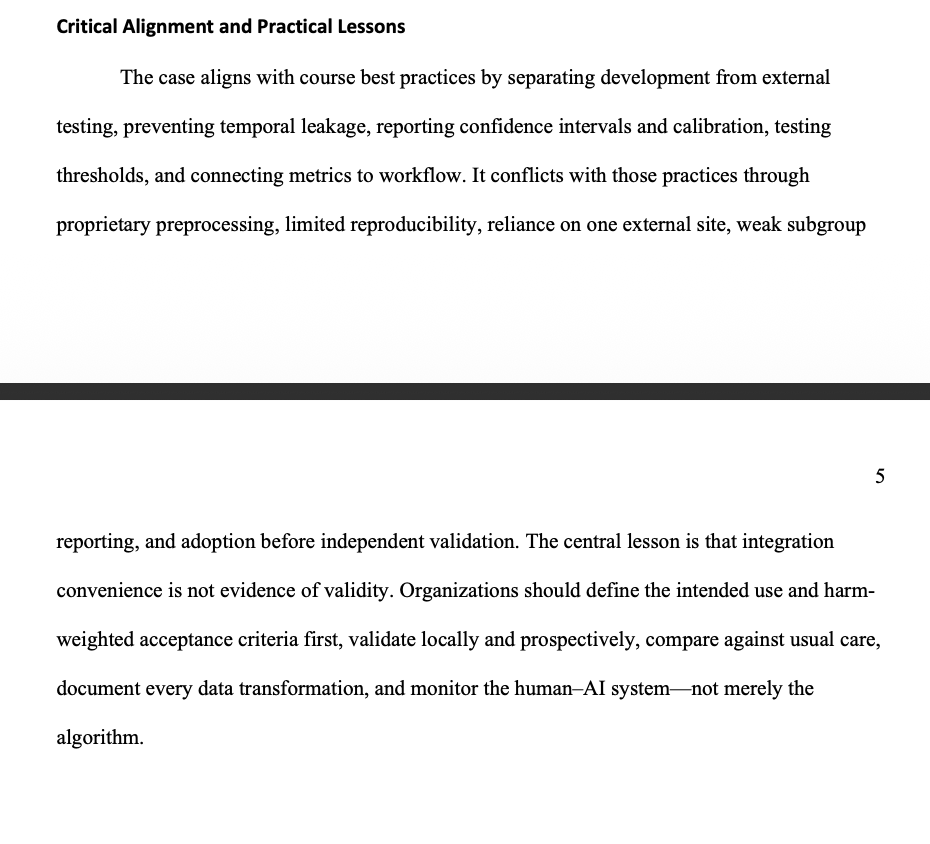
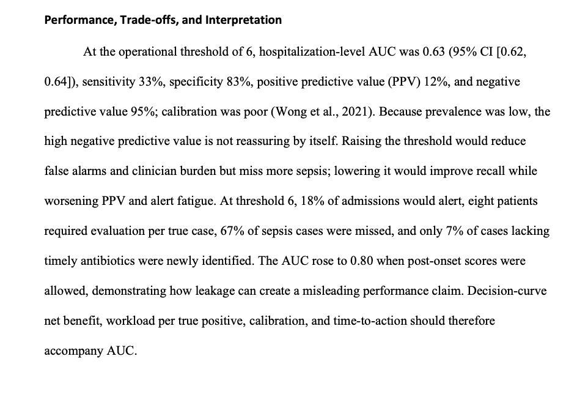
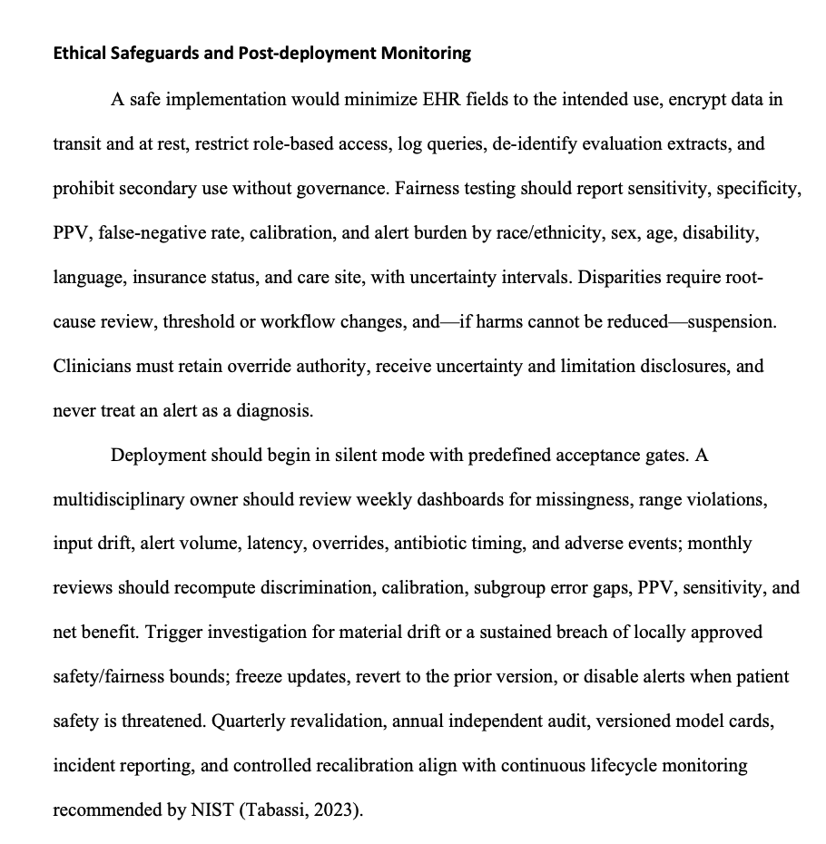
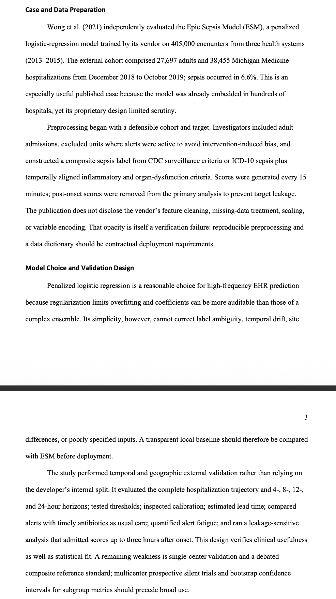

Introduction
Evaluating whether a deployed AI model is truly reliable
This artifact analyzes the external validation of the Epic Sepsis Model, a proprietary prediction system deployed across many hospitals. The case demonstrates why a model should not be considered trustworthy simply because it is widely implemented or performs well in internal testing.
The analysis focuses on validation design, target leakage, discrimination, calibration, threshold trade-offs, alert burden, fairness, privacy, and continuous monitoring after deployment.
Description
Project overview
The paper evaluates the published external validation of the Epic Sepsis Model by Wong et al. (2021). The external cohort included adult hospitalizations at Michigan Medicine, and the analysis examined whether the model generalized beyond the data and health systems used during development.
The artifact also evaluates preprocessing transparency, temporal leakage, calibration, alert fatigue, subgroup fairness, governance, and the monitoring processes that should be required before and after deployment.
Objective
Project goal
The objective was to critically evaluate a real-world machine learning validation case and determine whether the model met the technical, operational, and ethical standards necessary for safe deployment.
- Evaluate external validation rather than relying only on internal model performance.
- Identify target leakage and explain how it can inflate performance estimates.
- Interpret discrimination, calibration, sensitivity, specificity, and predictive value together.
- Connect model thresholds to clinical workload and harm.
- Recommend privacy, fairness, governance, and post-deployment monitoring safeguards.
Key Concepts
Validation and verification concepts demonstrated
External Validation
The model was evaluated on a different health system and time period from its original development data to test generalizability.
Target Leakage
Allowing post-onset information increased AUC substantially, showing how leakage can create a misleading picture of model quality.
Calibration
Calibration was considered alongside AUC because predicted probabilities must correspond to actual clinical risk to support safe decisions.
Threshold Trade-offs
Lower thresholds increase sensitivity but also increase false alarms and alert fatigue, while higher thresholds reduce burden but miss more cases.
Fairness and Governance
The analysis recommends subgroup performance testing, clinician override authority, access controls, audit logs, and transparent limitations.
Continuous Monitoring
The artifact recommends silent deployment, predefined acceptance gates, periodic revalidation, drift monitoring, incident reporting, and controlled recalibration.
Key performance findings
AUC and discrimination
At the operational threshold, the hospitalization-level AUC was 0.63, showing limited discrimination in the external setting.
Sensitivity and missed cases
Sensitivity was 33%, meaning a large proportion of sepsis cases were not identified by the model.
Positive predictive value
PPV was 12%, indicating that many alerts would not correspond to true sepsis cases.
Alert burden
The analysis showed substantial clinician workload per true positive, reinforcing that operational usefulness matters alongside statistical performance.
Leakage effect
When post-onset scores were admitted, AUC rose to 0.80, demonstrating how leakage can materially distort validation results.
Clinical usefulness
The paper argues that net benefit, lead time, calibration, workload, and time-to-action should accompany traditional performance metrics.
Process
How the artifact was developed
Selected a real-world validation case
I used the external evaluation of the Epic Sepsis Model as a practical example of validation and verification in healthcare AI.
Reviewed cohort and preprocessing design
I examined inclusion criteria, target construction, score timing, and the risks created by proprietary preprocessing.
Evaluated validation methodology
I assessed temporal and geographic validation, calibration, horizon testing, threshold analysis, and leakage-sensitive evaluation.
Interpreted performance trade-offs
I connected AUC, sensitivity, specificity, PPV, and alert volume to clinical burden and patient risk.
Added ethical and operational safeguards
I incorporated privacy, fairness, clinician oversight, governance, monitoring, and revalidation requirements.
Revised for the portfolio
I transformed the academic analysis into a professional case study emphasizing practical model-risk and deployment lessons.
Tools and Technologies
Methods and concepts used
Lessons Learned
What I learned
The most important lesson was that deployment convenience and widespread adoption are not evidence that a machine learning model is valid. Independent external testing is necessary to determine whether a model generalizes to a new population and operating environment.
I also learned that a single metric such as AUC can hide important weaknesses. Calibration, sensitivity, PPV, alert burden, fairness, lead time, and downstream workflow impact all matter when evaluating whether a model is useful and safe in practice.
Artifact-Specific Value Proposition
Unique value and relevance
Unique Value
This artifact demonstrates my ability to critically evaluate a deployed machine learning model using both statistical and operational evidence. It shows that I can identify leakage, interpret calibration and threshold trade-offs, and connect technical performance to real organizational risk.
Professional Relevance
This work is relevant to employers and technical teams building or deploying AI in high-impact environments. It demonstrates an understanding of validation, governance, fairness, monitoring, and human oversight— all essential for responsible production AI.
References
Sources and supporting references
Tabassi, E. (2023). Artificial intelligence risk management framework (AI RMF 1.0) (NIST AI 100-1). National Institute of Standards and Technology.
Wong, A., Otles, E., Donnelly, J. P., Krumm, A., McCullough, J., DeTroyer-Cooley, O., Pestrue, J., Phillips, M., Konye, J., Penoza, C., Ghous, M., & Singh, K. (2021). External validation of a widely implemented proprietary sepsis prediction model in hospitalized patients. JAMA Internal Medicine, 181(8), 1065–1070.
Evidence
Case-study evidence and original report




Complete Report
Model Validation and Verification
Review the complete six-page analysis of external validation, model performance, ethical safeguards, and post-deployment monitoring.
View Complete Report